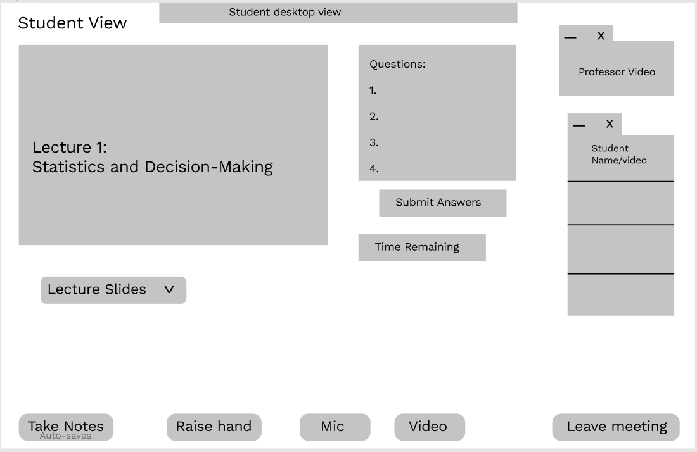
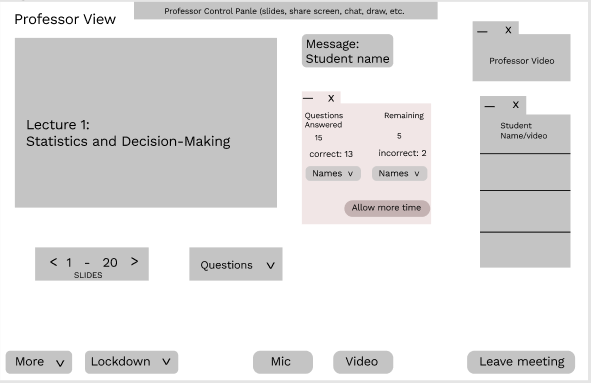
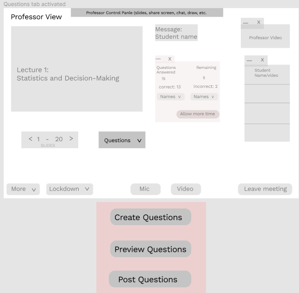
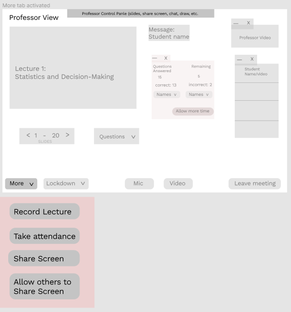
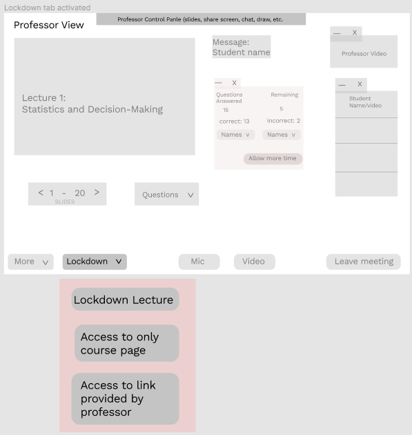

Pros: Overall, our participants liked the design, apart from the professor’s view of the screen, which was too detailed. There were some questions about the length of the lectures and whether it would slow it down. We don’t believe it will slow down the lectures but instead make it easier because in the current online class platform, professors use other forms of questionnaires such as slido, so it should not be time consuming as such.
Cons: Professor’s view of the screen had too many pop-up screens which can get confusing, so they suggested grouping the similar windows together and using the minimize option to give it a cleaner look.
Participants ideas: Some of our participants suggested that the features on the design are too cluttered. They suggest having a mega menu or a fat footer that have features like the question generator, and questions alert to avoid too many things on the professor’s screen.
Pros: Participants will be able to focus more on a live lecture rather than a recorded lecture. It prevents students from cheating in the class like doing a copy and paste function will be invalid while the lockdown browser is activated. Students won’t be able to chat with each other unless permitted by the professor.
Cons: Participants pointed out that this does not prevent distractions from sources beyond the students computer. Other factors like roommates, family members, game consoles, or user’s phones can still distract them just as easily. Another major criticism was that many students use their device to take notes, and this design prevents them from doing so, as well as preventing the professor from sharing outside sources of information such as website links or word documents during lecture.
Participants ideas: Some participants suggested that we focus on other ways to keep students from becoming distracted outside of locking down their device, such as cardboard blinders like those typically used for students taking pen-and-paper tests in close proximity to each other.
Pros: Some participants observed that this design would be easy for students to learn since it is similar to zoom, and since certain UI elements that students use more often are more visible.
Cons: Some participants pointed out that the professor’s view of this app would be too complicated for most professors to focus on while trying to give a lecture. They suggested moving many of the screen elements to menus so that the professor can enable them or hide them at any time.
Participants ideas: Some participants suggested combining this idea with our auto-questioner idea.
Pros: Our participants liked the eye tracker design. They believe that it is a convenient and effective tool for teachers who want to monitor their students. They believe through this system students will be more focused and engaged in class activities.
Cons: Some participants pointed out that regular cameras can’t actually do eye tracking, and that eye tracking requires special hardware to do correctly. Other members pointed out that this design was a violation of student privacy and questioned whether professors are allowed to force students to turn on their webcams. Another criticism was that not all students will necessarily even have a webcam that they can use, making this idea worthless to those users.
Participants ideas: Some participants suggested we do whole face tracking rather than just eye tracking, as most standard cameras these days can handle that task.
We plan to incorporate ideas from our first three designs. By default, we will have some of the UI elements from BetterZoom and Auto-questioner, with each screen element able to be enabled or disabled by the user as per their needs. The screen will start off with just the professor's shared screen and students or professors can add more elements as they need. The Auto-questioning and Lockdown-Lectures namesake features will be options that the professor can enable in lieu of things like clicker questions or when they want to give a closed-note quiz. This way, all the features a professor needs can be built into one app or website so that these features can be used more quickly and seamlessly, while still providing an easy to use and clean interface for everyday lecture activities.
Out of the four designs, we decided to choose the auto-questioner, better zoom, and lockdown lecture to incorporate into our digital prototype. We thought these features would make online learning a better experience for both the professors/TA’s and the students. We got the feedback of combining some features into one screen, such as the raise hand and the auto-questioner feature since all of them were related. Another feedback we got was to make the professor’s view of the screen cleaner to avoid confusion by condensing some of the tabs and only putting in the most important features into the prototypes. The auto-questioner and the lockdown browser would make sure students are paying attention during lectures and they are not web surfing. These features would encourage the students to watch the lectures because the professor asks questions during the lectures which can impact the students’ grade if they don’t answer correctly. The better zoom feature would have the raise hand and chat feature, which will be more prominent since many times professors don’t see student questions and some students don’t speak up because they are shy, therefore they may struggle. This feature will allow the professors/TA’s to get a pop-up notification so they can address the question accordingly.
Someone from our Student user group would open our app and see the screen from the Student Main Screen image. They may or may not see spaces for questions and/or have the app lock down their screen depending on what options the professor has chosen, they will be able to take notes from within the app, and ask questions easily with the Take Notes and Raise Hand buttons, respectively. They will also be able to view other slides beyond the one the professor is on currently, as well as see a timer for how much time is remaining in class, which will reduce the need for them to take out their phones to check the time or look around for a clock. The Professor Main Screen image shows what a professor might see while using the app. The professor can see how many students have answered the question in the center window, what slide they are currently on in the left window, a clear button to move between slides, and a clear indicator that a student has a question at the top. There are several tabs along the bottom of the screen, which all provide more options for how to run a class. The questions dropdown menu can be seen in the Questions Tab image, it will allow the professor to create, preview, and post new questions for the class. The dropdown for the More tab can be seen in its respective image, allowing professors to record lecture, auto-take attendance, share their screen or allow a student to share their screen. Finally, the lockdown image shows a dropdown with options to initiate lockdown mode, whitelist the course page, or whitelist another approved link or app.
Student Main Screen
Professors Main Screen
Questions Tab
More Tab
Lockdown Tab
